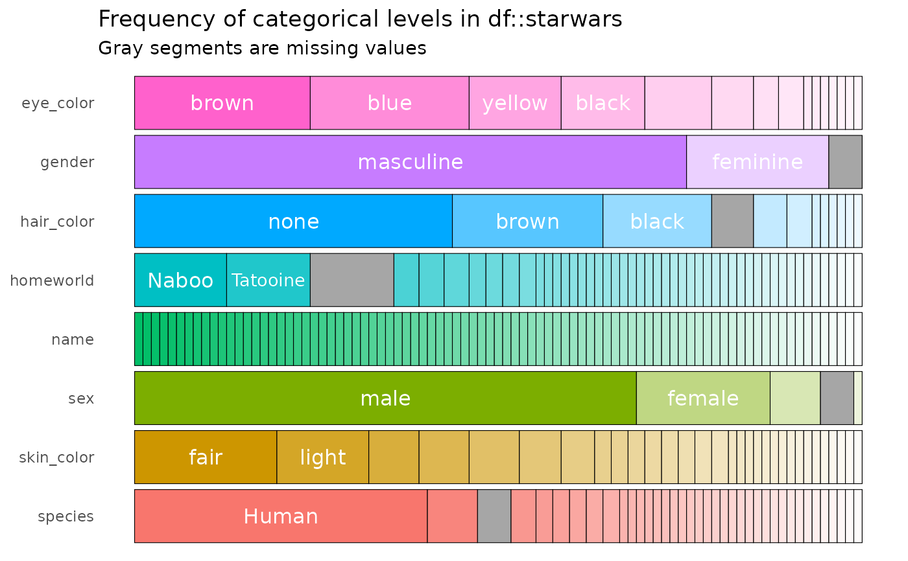
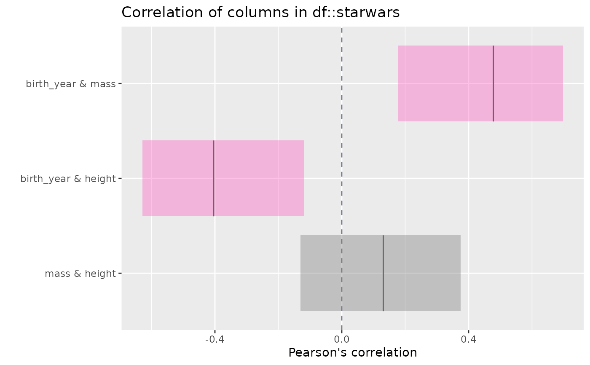
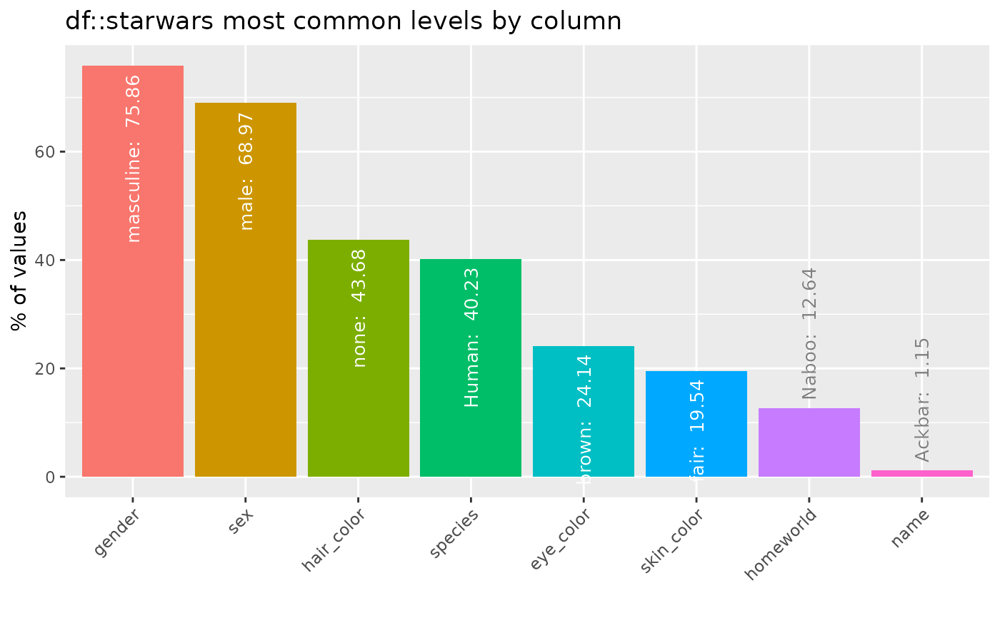
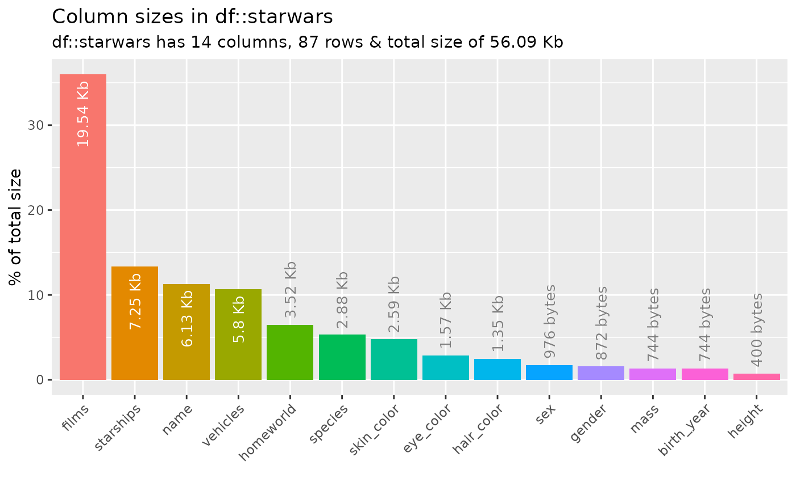
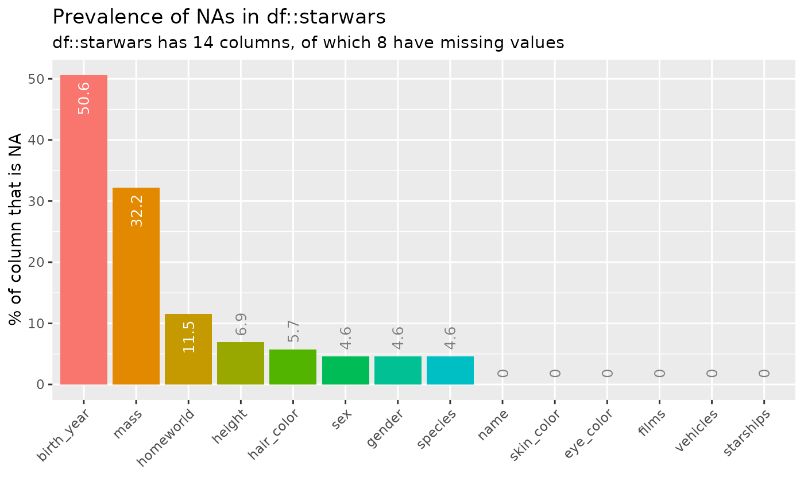
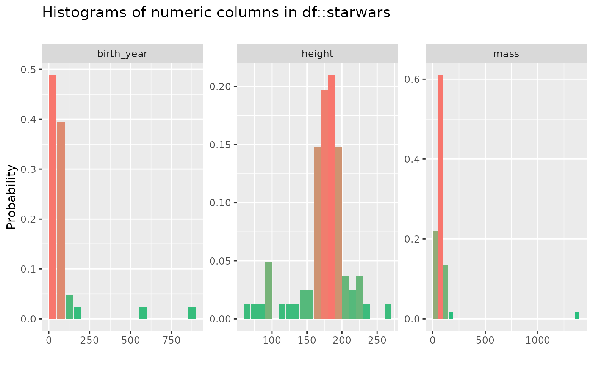
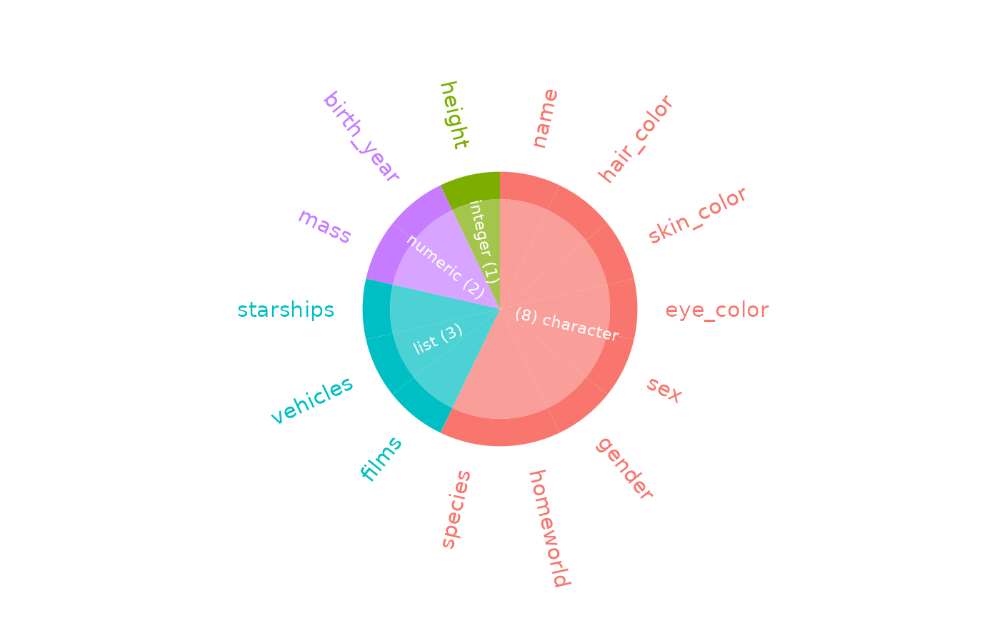

Easily visualise output from inspect_*() functions.
Details
Generic arguments for all plot type
text_labelsBoolean. Whether to show text annotation on plots. Defaults to
TRUE.label_colorCharacter string or character vector specifying colors for text annotation, if applicable. Usually defaults to white and gray.
label_angleNumeric value specifying angle with which to rotate text annotation, if applicable. Defaults to 90 for most plots.
label_sizeNumeric value specifying font size for text annotation, if applicable.
col_paletteInteger indicating the colour palette to use:
0: (default) `ggplot2` color palette,1: colorblind friendly palette,2: 80s theme,3: rainbow theme,4: mario theme,5: pokemon theme
Arguments for plotting inspect_cat()
high_cardinalityMinimum number of occurrences of category to be shown as a distinct segment in the plot (
inspect_cat()only). Default is 0 - all distinct levels are shown. Settinghigh_cardinality > 0can speed up plot rendering when categorical columns contain many near-unique values.label_threshMinimum occurrence frequency of category for a text label to be shown. Smaller values of
label_threshwill show labels for less common categories but at the expense of increased plot rendering time. Defaults to 0.1.
Other arguments
plot_typeExperimental. Integer determining plot type to print. Defaults to 1.
plot_layoutVector specifying the number of rows and columns in the plotting grid. For example, 3 rows and 2 columns would be specified as
plot_layout = c(3, 2).
Examples
# Load 'starwars' data
data("starwars", package = "dplyr")
# Horizontal bar plot for categorical column composition
x <- inspect_cat(starwars)
show_plot(x)

# Correlation between numeric columns + confidence intervals
x <- inspect_cor(starwars)
show_plot(x)

# Bar plot of most frequent category for each categorical column
x <- inspect_imb(starwars)
show_plot(x)

# Bar plot showing memory usage for each column
x <- inspect_mem(starwars)
show_plot(x)

# Occurence of NAs in each column ranked in descending order
x <- inspect_na(starwars)
show_plot(x)

# Histograms for numeric columns
x <- inspect_num(starwars)
show_plot(x)

# Barplot of column types
x <- inspect_types(starwars)
show_plot(x)
